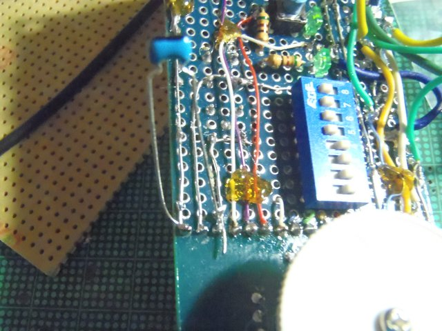

Sorry, under construction and Japanese only,Yet...
DSPラジオ(2013-02-06)
もくじ
これは何か
どのようなものか
製作
ケースに組み込む
その２(2013-04-10)
電子工作系もくじへ
全体目次へ
これは何か
最近のラジオは同調から検波・増幅までデジタル処理でやるものがあります。そのようなものは高級品に限られてきましたが、秋葉原のアイテンドーで二種類のモジュールが480円で売られるようになりました。
なので、大したことはないだろうと思って買って見ることにしました。が…
どのようなものか
今回使ったのは、DSP-443です。
付属のバリコンで選局してラジオを受信し、IC内部で増幅・デジタル復調した後に、スピーカーを鳴らします。
使用可能周波数帯は中波〜短波〜FM放送です。

写真で見るとわかるように、ICの部分が樹脂で覆われてブラックボックスになっていますが、有志の調査で、DSP6919と言う中国製のチップ（データシートのスキャン(PDF)、簡体中国語)が使われているようです。
まずは機能チェックを兼ねて、なるべくメーカの回路図に沿ったものを作りました。
変更点は、アンテナ端子とアンテナ用のGND端子にコンデンサをかませたのと、後は中波でも外部アンテナが使えるように、1ピンと3ピンをコンデンサで結合させた程度です。
回路図とgSCH用のDSP443のシンボルセット
実装基板は、アイテンドーから出てる
「DSPブレークアウト基板 DSP443-BKO」を使いました。モジュール型番ごとに適応するブレークアウト基板が違うので、買うときは注意して下さい。
その他に、400μH前後のバーアンテナやジュンフロン線のような細くて絶縁されてる線材が必要です。アイテンドー等から入手できます。通常のAM用のバーアンテナで大丈夫だと思います（感度の問題を除き）。
製作
この基板、両面スルーホールなので、配線するときやハンダ付けの時は注意して下さい。
モジュールを実装するために、ネジ止めしましょう。このネジは別売りです
ブレークアウト基板の側からメッキ線で足を張っていきます。モジュールのほうが熱に弱いので。
足張りが終わりました
DIPSWなどをジュンフロン線とめっき線を上手く使い分けて配線していきます。両面スルーホール基板なので、部品の実装は両面を使って、バリコンの軸が出てる面にUI関連を集中させて行きましょう。
とりあえず基板が組み上がったのでテスト。適当な電線をアンテナ代わりにして、適当な電源をつなぎます。FMはガンガン鳴るけどAM/SWは上手く鳴りません(--；
鉄筋コンクリートのビルなので、アンテナが不十分なようです。

調整が終わったので、ホットメルト（と言うかマジック半田）の樹脂で、配線の要所を固めて固定してしまいましょう。グルーガンがある人はマジック半田よりもベターでしょう（多分）
さて、手元にあった50m巻のエナメル線をアンテナ代わりにして、窓から外に垂らして見ました。
AMやSWで受信できる局が相当増えましたヽ(´▽)ノ
これから作るΔLoop9アンテナとの組み合わせが期待できそう。
ケースに組み込む
今後の性能が期待できそうなので、若干の調整(の途中で間違ってショートさせて、ブレークアウト基板のパターンを焼いたのは秘密ですが)
をした上でケースに組み込むことにしました。
ケースを百均で買って来ました。よくある取っ手付きの小物入れです。
ケースにマジックでけがいていきます。スイッチの位置は現物あわせです（＾＿＾；。元々ケースの中に入れるつもりがなかったと言う。
ケースが柔らかいので、ポンチで穴位置を打つよりも、小型の電動ドリルで2mm程度の穴を開けたほうが何かと便利です
スピーカーの穴を開けていきます。
アンテナ端子に線材とコンデンサを付けます。
出来あがり。下手下手ですね(；´Д｀)時期を見て、修正しちゃったほうがベターですね(；´Д｀)
それはともかく、単3エネループ二本で二十時間前後動くのは凄いですね
次へ
本ドキュメント・及びノウハウは CC BY SA v3.0で公開します。
CC BY SA v3.0で公開します。
実装技術等の特許登録はこれを禁じます。(DO NOT PATENT THIS TECHNIQUES)
後日問題が出た場合は変更の可能性あり。
DSP443-Mod by http://sky.geocities.jp/artanejp/ELECTRONICS/
is licensed under a Creative Commons
Attribution-ShareAlike 3.0 Unported License.
電子工作系もくじへ
全体目次へ
Last Update: 06 Feb.2013 by Artane. ( whatisthis.sowhat _a_t gmail.com )